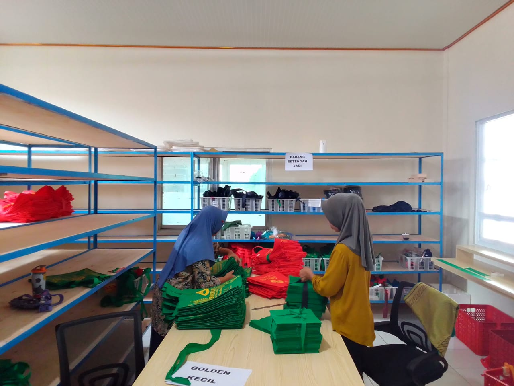

"Lebih dari Sekedar Konveksi, Kami adalah Mitra Anda"
Menjadi andalan dalam Produksi Berkualitas.
Perjalanan Kami
Sejarah CV TRINAWA
CV Trinawa bermula dari usaha kecil rumahan dengan hanya dua mesin jahit dan beberapa tenaga kerja. Awalnya, konveksi ini fokus menerima pesanan seragam sekolah dan perusahaan dalam jumlah terbatas. Berkat kualitas jahitan yang rapi dan bahan yang berkualitas, CV Trinawa mulai dikenal dan mendapatkan kepercayaan dari pelanggan, sehingga pesanan terus meningkat. Seiring dengan perkembangan usaha, CV Trinawa mulai berinovasi dengan menggunakan teknologi sablon digital dan bordir komputer. Hal ini memungkinkan produksi menjadi lebih cepat dan hasilnya lebih rapi. Selain itu, pemasaran yang awalnya hanya dari mulut ke mulut mulai diperluas melalui media sosial dan marketplace, sehingga jangkauan pelanggan semakin luas, mencakup berbagai komunitas dan perusahaan dari berbagai daerah. Kini, CV Trinawa telah berkembang menjadi konveksi terpercaya yang melayani berbagai kebutuhan, mulai dari kaos, jaket, hingga merchandise custom dengan standar kualitas tinggi. Dengan komitmen untuk terus berinovasi dan memberikan pelayanan terbaik, CV Trinawa terus memperluas jangkauannya dan berencana untuk mengembangkan sistem produksi yang lebih ramah lingkungan demi keberlanjutan usaha di masa depan.
Galeri Workshop dan Teamwork Kami



SUKSES KLIEN
"Cerita Sukses Kami"
★★★★★
"Saya sangat puas dengan hasil jahitan dari CV Trinawa. Bahan yang digunakan berkualitas, jahitan rapi, dan pesanan selesai tepat waktu. Pelayanan customer service juga ramah dan responsif. Pasti akan pesan lagi untuk kebutuhan seragam kantor!"

Rina Putri
★★★★★
"CV Trinawa benar-benar memberikan hasil terbaik! Saya memesan kaos sablon untuk komunitas, dan hasilnya sangat memuaskan. Warna sablon tidak mudah luntur, ukuran sesuai, dan harga juga bersahabat. Terima kasih atas pelayanan yang profesional!"
Budi Santoso
★★★★★
"Pesanan jaket untuk acara kampus kami dikerjakan dengan sangat baik oleh CV Trinawa. Bahan adem, jahitan kuat, dan desainnya sesuai dengan yang kami inginkan. Proses produksi juga cepat dan sesuai deadline. Sangat direkomendasikan!"